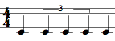

OpenMusic DocumentationHiérarchie de section : OM 6.6 User Manual > Score Objects > Rhythm Trees > Rhythm Trees Structure
OpenMusic DocumentationHiérarchie de section : OM 6.6 User Manual > Score Objects > Rhythm Trees > Rhythm Trees Structure
Navigation : page précédente | page suivante
Attention, votre navigateur ne supporte pas le javascript ou celui-ci à été désactivé. Certaines fonctionnalités de ce guide sont restreintes.
Rhythm Trees Structure
Traditionally, rhythm is broken up into several data : meter, measure(s) and duration(s). Rhythm trees must enclose these information in lists and sub list.
This elementary rhythm :

can be expressed as follows :
- ( ? ( (4//4 (1 1 1 1) ) ) )
- ( ? ( ( (4 4) (1 1 1 1) ) ) )
A tree structure can be reduced to a list : (D (S)).
Main Components : Duration and Subdivisions
|
Here, the (1 1 1 1) sub list represents four equal subdivisions of a 4/4 measure. OM calculated that the tree has two measures.
|
{kind=link}
Durations
Manipulating Durations
By default, the duration of a measure is equal to 1. 1 represents the global measurement unit traditionally expressed by the time signature, such as : 4/4, 2/2 =  , 3/8 =
, 3/8 =  etc.
etc.

Changing this value multiplies or divides all the durations by a given coefficient.
Subdivisions : Measures and Groups
Measures
Trees define the way measures are split into proportional durations.
The following rhythm :

is written : ( ? ( (4//4 (1 2 1) ) ) ) .
Groups
Trees also define internal subdivisions, or groups[1] , within a measure**.**
The following rhythm :

is written : ( ? ( (4//4 (1 ( 2 (1 1 1) ) 1) ) ) ****** )** .
Writing Groups
Note that groups must be written with a new subordinate level of parenthesis. |
Références :
Group
An internal subdivision, that is, a list of proportions within a measure. A group can enclose a sub group. Basic examples are tuplets, groups of eighth, sixteenth notes. Groups of quarter, semibreves, whole notes or any other values are also admitted in rhythm trees.
For instance :
(? ((4//4 ( (2 ( 1 1)) (1 ( 1 (1 (1 1 1)))) (1 (1 1 1 1 1)) )))).
This one measure tree has one group – two quarter notes – , one group with a sub group – one eighth note and a sixteenth notes triplet, and a last group – a quintuplet.

Plan :
- OpenMusic Documentation
- OM 6.6 User Manual
- Introduction
- System Configuration and Installation
- Going Through an OM Session
- The OM Environment
- Visual Programming I
- Visual Programming II
- Basic Tools
- Score Objects
- Presentation
- Rhythm Trees
- Rhythm Trees Structure
- Notation : in Practice
- Score Players
- Score Editors
- Quantification
- Export / Import
- Maquettes
- Sheet
- MIDI
- Audio
- SDIF
- Lisp Programming
- Errors and Problems
- OpenMusic QuickStart
Navigation : page précédente | page suivante
A propos...(c) Ircam - Centre Pompidou